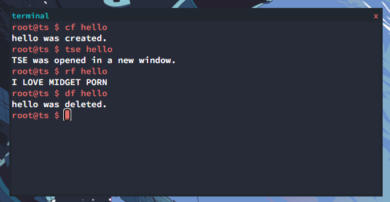

The Terminal
To use NetBox, you must know how to use the terminal and what it offers.

echo
lets you echo text back at you through the terminal. Here is a example.
root@netbox $ echo hi
hi
clear
lets you clear the terminal.
js
lets you run javascript through the terminal. Here is a example.
root@netbox $ js terminline('hi');
hi
terminline('hi'); was run by the OS.
version
shows your OS info including version and DE. Here is a example.
root@netbox $ version
user: root@netbox
window-manager: nbwm
version: 0.6
last-updated: 04/18/2022
cf
lets you create a file. Here is a example.
root@netbox $ cf hi
hi was created.
ef
lets you edit a file with kedit. Here is a example.
rf
lets you read a file inside the terminal. Here is a example.
root@netbox $ rf hi
I LOVE MEN
df
lets you delete a file inside the terminal. Here is a example.
root@netbox $ df hi
hi was deleted.
install
lets you install a program. Here is a example.
root@netbox $ install https://brodyking.github.io/netbox-packages/install.js
The appsInstaller successfully finished. Please reboot to see the changes.
tempinstall
lets you install a program that will delete itself next reboot. Here is a example.
root@netbox $ tempinstall https://brodyking.github.io/netbox-packages/script.js
reboot
lets you reboot the system.
{kind=link}